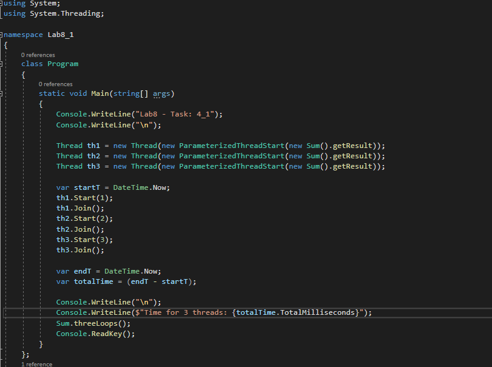

Тема, мета і постановка задачі
Тема: ПОТОКИ.
Мета: придбати практичні навички роботи з потоками.
Постановка задачі:
В окремому проекті виконати завдання:
- Завдання 4_1
- Знайти суму чисел від 1 до 100000000.
- Скопіюйте програмний код обчислення ще 2 рази.
- Визначте час виконання циклів за допомогою властивості TotalMilliseconds у об'єкта DateTime.
- Зробіть 2 додаткових потоки, в кожному з яких буде виконуватися той же цикл.
- В основному потоці закоментуйте 2 цикли, щоб залишився тільки один. Таким чином, кожен з 3-х циклів, буде виконуватися в своєму потоці.
- Визначте час виконання в цьому випадку.
- Завдання 4_2
- Створіть клас, конструктор якого буде як параметр приймати об'єкт файлу.
- Додайте метод, який буде зчитувати текст з файлу і повертати готовий рядок.
- Додайте метод, який буде записувати в файл переданий в параметрах рядок.
- Створіть 2 потоки, які повинні будуть одночасно записуватись в файл, використовуючи екземпляр створеного Вами класу, деякий рядок (кожен з потоків повинен спробувати записати свій рядок), а після виводити в консоль результат їх записи.
- Досягти того, щоб сталася помилка. Наприклад, потік записав «Рядок 1», а в консолі в цьому потоці вивелося «Рядок 2» через те, що в цей самий момент інший потік записав в файл «Рядок 2».
- Синхронізуйте потоки, щоб цієї помилки більше не було.
- Завдання 4_3
- Зробити синхронізацію в попередній вправі, але з використанням м'ютексів.
- Завдання 4_4
- Візьміть за основу попередню вправу. І додайте ще 3 аналогічних існуючим потоки.
- Приберіть м'ютекси і підключіть семафор, який повинен підпускати до файлу одночасно тільки 2 потоку.
- Проаналізуйте отриману різницю в порівнянні з варіантом на м'ютекс.
Файлова структура
Завдання 4_1
Завдання 4_2
Завдання 4_3
Завдання 4_4
Посилання на проект
https://github.com/UniversityTeam/filmhub-netВиконуваний файл
ЗавантажитиВисновки
Основною метою лабораторної роботи було вивчення та реалізація роботи з потоками, мьютексами та семафорами. Виконано завдання 4_1, 4_2, 4_3 та 4_4 та дотримано умови цих завдань. Робота всіх трьох потоків у завданні 4_1 була завершена за 293 мілісекунди. Потоки виконувалися паралельно Найдовше виконувався потік №3 244 мілісекунди.